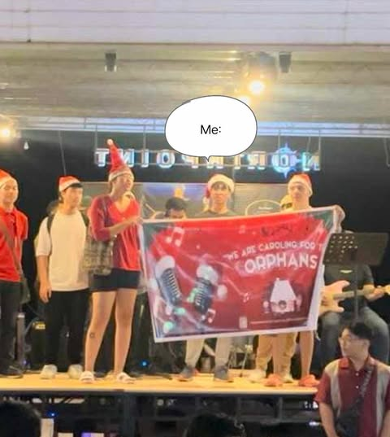

On the 21st day of August, I was participating in a Coastal Clean-up at Cheese Stick Country, Dumaguete City. It was organized CWTS adviser Timothy John Rebotaso and it started at 6 a.m. and ended at 7 a.m. The main objective of the event is to ensure the cleanliness of the coastal area in Dumaguete and to minimize the garbage in the area
During the clean-up, I was actively doing my task and as I kept picking up garbage, I realized that garbage is a serious matter and there’s plenty of it in our surroundings it made me question if is it the people are the problem or our educational system. I was expecting a lot of trash since we were cleaning in a highly populated area and as I arrived, I saw trash everywhere. The organizer of the event initiated the event and it would be better if we did activities that are beneficial to the community instead of always attending lectures. I believe that there should be a balance between the two. It was an easy task since we were just picking trash and I felt fulfilled that I was able to help in the community.
The activity me realize that helping the community is such a fulfilling task and I’ll make sure to continue to do so. By actively participating in the gathering of CWTS I can associate with the group more and if they will organize similar activities such as this I would join without hesitation. The activity is extremely beneficial to maintain the cleanliness of the community.
Because of this event, I am feeling a sense of fulfillment because of the activity that I was doing. By simply picking up small trash on the shore and streets I was able to contribute to the community even if it is just a little and we accomplished cleaning the assigned area. I just hope that we focus more on serving the community instead of attending lectures since I believe that that is our role as a CWTS cadet. I am not saying the lectures are useless it's just that there should be a balance..
DING IBATO! DODGE BALL FOR A CAUSE
On November 13, 2024, from 3 p.m. to 5 p.m, there was an event called "DING IBATO!, Dodgeball for a Cause." Organized by DOST sa SU, the event was held at the Rovello Soccer Field at Silliman University. The reason for this event is to support the Dumaguete Animal Sanctuary in its mission to care for animals in need. I was a participant in this event, and together with my classmates, we placed second and our random team name was ELLIAN and friends.
While playing the game, I learned to effectively dodge the balls, and also catch the ball since it was in the rules that if we catch somebody, we could revive them. My initial expectation was to use a ball that is the size of a tennis ball, but to my surprise, we used a soccer ball and a volleyball, which is hard to throw since it's hard and bigger than the typical dodgeball that I am used to. The event made an impact on me when we were fighting for the finals because we were annihilated by the opposing team. We were struggling so much and we couldn't keep up with them. So, the opposing team was just too strong. That's why we only achieved second place in the event. They were like a huge obstacle for us. Good thing we fought them at the end. But that's just how it is. We win some, we lose some.
The event made me realize that simple games such as dodgeball can be used as a method to gather up some people and voluntarily register and have some fun. While they register, the funds that the organizers accumulated will be sent to the animal sanctuary, helping the animals. I learned that with a creative mind, things like this event are possible. I want to continue my involvement with the DOST sa SU. With that, I will follow their page and look forward to further activities that they will have to offer. The activity was extremely beneficial for the Dumaguete Animal Sanctuary to help those animals that need help. But if I were to do the event again, it would be to use balls that are much smaller rather than a volleyball or a soccer ball.
Because of this event, I am able to have fun while at the same time helping animals in a way that our funds will be sent directly to the Dumaguete Animal Sanctuary and they will use those funds to cater to animals that need their help. The activity was enjoyable and even though we got annihilated in the last round, the final round, we still did our best and just had some fun.
Blood Donation Drive
On November 16, 2024, at 1:30 p.m. – 3:00 p.m. I was volunteering to donate blood since there was a Blood Donation Drive at SU Oriental Hall. The event was organized by Ashleigh Daffimay together with the Philippine Red Cross. I willingly took part of the activity and donated my blood to those people that will soon need it.
In the event I learned that people can’t just donate blood right away. There is a process to verify if an individual is eligible to donate blood since they can’t risk having blood that has STD’s or other types of diseases. I saw some people who were weakened after their blood was taken and I told myself that I should not be as weak as them. It had a little effect on me making me slightly weak. While the member of Red Cross Philippines was taking my blood, I struggle to even crush my own hand and I have never felt that weak before. It made me think that this is a task that should not be underestimated. It was a good thing that the person who was taking my blood Is kind and is able to entertain the people that he is taking blood so that they wont faint. The only part where I disliked the situation was when my blood was being taken, I was really weak at that time. But besides other than that I felt good since I was able to somewhat help out in the community and I am proud of my self for volunteering.
I really respect people who are doing good for others and I admire the organizer for making such an event possible and also to the Red Cross Philippines. To keep myself involved with them I will keep in touch through social media and the blood donation drive is such a good idea to help patients who are in need of blood.
Because of this activity, I am now aware what’s it like to donate blood and the feeling of loosing blood. The feeling that I felt was weird but no emotion can replace the fulfillment of helping other people even since it made me realize that I was anow a part of helping the community.
Mangrove Tree Planting
On the first day of December there was a Mangrove Tree Planting Event at Bais City. Organized by Micheal Caluyo from Qualfon Mission360- Dumaguete, I was a participant in this event together with 3 of my GE10 classmates and Qualfon Employees we departed from Qualfon at 5:30 AM and arrived by 7:00 a.m. and ended at around 9 a.m. We planted 3,000 trees totaling to 14,000 for the past years that Qualfon has participated in mangrove tree planting.
In this event I learned the proper way of planting a mangrove tree and I also learned their importance for flood prevention. There was a person guiding us on how to properly plant the trees and giving us random facts about it. The only thing that surprised me in this activity is the mud. It was so muddy that my whole arm and feet were black. Planting mangroves will significantly decrease the chances of floods in an area and if it is maintained and if the tree is constantly planted, the casualties from floods will make be reduced. During the event, the person who was teaching and guiding the newbies was actually a local in the area. He told us that they are responsible for planting most of the mangroves in the area. My respect immediately rose up from the guy. Although I was dirty and the annoying mosquitos were present it still felt good to be able to participate in such an important event.
The event made me realize that there are small heroes like kuya guide doing their part to contribute to environment and to protect the community and I too can become one of these “heroes” just by simply doing my part. Qualfon actually does community events quarterly so to get in touch with them I will simply follow their page so that I will be notified if there are any new post from them. The mangrove tree planting event has a huge benefit to the locals in the area and it will protect them from floods.
Because of this activity, I am now part of the people who made a contribution to the community and it made me realize how important planting mangroves are especially when it comes to protecting the people and preventing floods from happening.
Christmas Caroling for a Cause

On December 7, 2024, at 7:30 p.m. 8:40 p.m, a caroling for a cause was happening. It was led by Angel Saga and I was one of the members who caroled. The main objective of our carol was to raise funds and buy things that are needed for orphans. We started at Café Racer, Lantaw, until Cheese Stick Country and the target for our carol are establishments which have plenty of people so that we can get more funds for a shorter amount of time. Together with fellow GE10 classmates, we participated in caroling, and even though I do not have a nice voice I still did my best since it is for the orphans.
I am an introverted person and going out in public caroling while strangers are listening to me, made me expect that I would just embarrass myself. Fortunately, everything went well and we successfully accumulated 8,100 PHP for not more than 2 hours. While singing, I realized that I was not alone and that if I made a mistake, it would not affect our performance. With that, I sang to my hearths content and did my part. Even though I was anxious at the beginning It made me happy that I was a part of the group of singers and because of that I am also contributing a little bit to the orphans.
It is hard to believe that in about one hour and forty minutes, we raised such a huge amount. It made me realize that there are plenty of people out there with such a good heart. As our session ended it inspired me to be kind and help other people in the little ways that I can. We have a group chat for the future events that will happen this month and I will look forward to it.
Because of this activity, I am filled with joy since I am a person who did not really do anything before and now, I am helping orphans to have a better Christmas. It was tiring I won’t deny that but it was also a fun activity with our team’s effort we are now able to help the orphans. There will be a second caroling session and I will look forward in joining in it soon.
Awareness Run
The Awareness Run is a fund-raising run that aims to help individuals in their mental and physical state and actual race started on December 8, 2024. But the main reason why this run was established is because the organizer, Mianne Villaflor wants to donate the accumulated funds to Casa Esperanza where orphans who are abused are currently being taken care of by Casa Esperanza. The registration from participants reached 62,000 php since there are around 609 runners (not official since some runners are from the orphans from Casa Esperanza) and each participant cost 100 php. It was held at Pantawan, Dumaguete City and the gun start for 1OKM runners started at 5:30 a.m, followed by the 5KM runners 10 minutes later. I was a part of the working committee in this event and in got it because I messaged their page saying if they need manpower for the event and for 3 days I was helping them. I did not have any specific task I was did stuff that I was told to do.
I messaged the Awareness Run page on Nov 27, 2024, and asked them if they lack manpower and if yes, I asked if it is possible for me to join the working committee, I also told them it’s for my GE10 subject. I talked with the organizer and I was not expecting her to let me in but I was surprised since she allowed me to help. We had an agreement. My first task was to make the names of 609 participants alphabetical and second is to categorize male and female using Excel. I just agreed with her even though I am not familiar with Excel and I just learned it while doing work. Also, before the actual race I helped in distributing the race bib and this is on December 6, from 4 p.m. – 8 p.m. and December 7, 4 p.m. - 6 p.m.. In the actual race, I multi-tasked helped in cleaning, distributing shirts, and verifying the runner's name and race bib before releasing the shirt. I enjoyed helping. Ma’am Mianne is such a kind person. Not only did she help the orphans she also helped a random student who messaged their page. I am so happy and grateful for her.
The experience made me realize that there are opportunities everywhere and it’s just for me to take action. I was contemplating for 3 days if I would message the page or not and out of impulse I did message them. The group was extremely welcoming and if there are any fun run events hosted by Ma’am Mianne I will then participate. The activity is a huge help for the orphans in Casa Esperanza and also for running enthusiasts since it will further build a community for runners.
Because of this activity, I have personally witnessed a huge act of kindness from a person and I was also able to explore out of my comfort zone by indulging myself in this community and sports event. I also learned how to use Excel more indepthly because of this event and I am happy that in a little way, I was able to help the orphans from Casa Esperanza.
Santo Niño Orphanage White Gift
On December 14, 2024, from 12:00 p.m. to 3:00 p.m. we were wrapping our White Gift for the Santo Niño orphanage at ATA Hall Silliman University. Organized by our own College Dean, Joy M. Dy my group actively participated in the activity. The main goal of the activity is to ensure that the orphans also have a Merry Christmas.
While wrapping our gifts for the orphans I thought to myself that simple actions like this will have a huge impact on the orphans. Before the event started, I did not read the instructions so I assumed that after we were done wrapping our white gift, I was expecting our dean to let us take the gifts to the orphans. We did not personally deliver the gifts and I am glad that this was the case since I had other stuff to do. The event made me realize that she has a big heart since she organized the event to make sure that the children in the Santo Niño were not left behind for Christmas. I am happy to be able to take part in the event since I was able to make the Christmas of those orphans a little better.
The activity made me think about how many children out there in the world who are suffering and do not have a home. The children in the orphan were fortunate enough to find their temporary home but unfortunately, this is not true for all children out there. I continue my involvement with the activities that our dean will organize I will simply wait for her announcements. The activity has such a huge benefit on the children that are in the orphan it’s sad that we are not able to help children that are not in the orphan due to limited supplies and manpower.
Because of this activity, I feel a sense of fulfillment taking part in the activity. With Christmas closely approaching, children should not be left behind for the “Merry” on Christmas. The activity will help the children with their daily necessities since the gifts we sent were supplied for their needs.